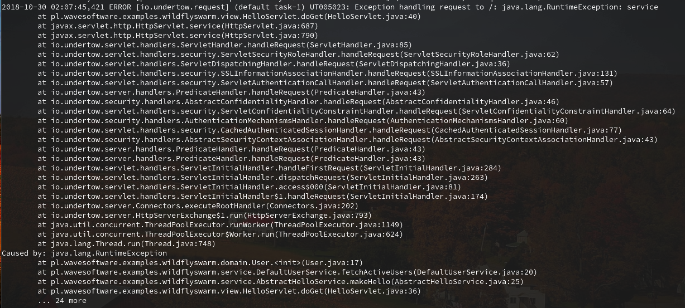
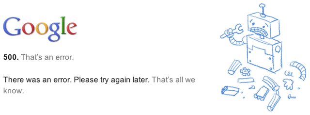
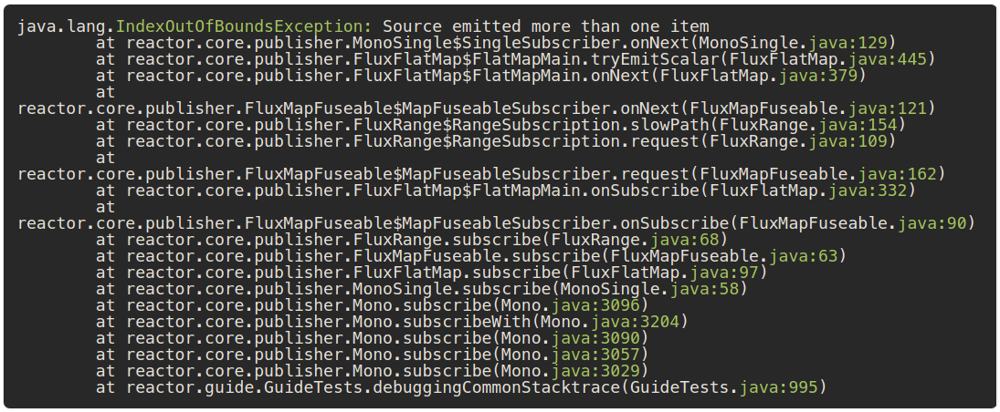
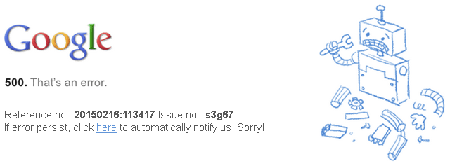
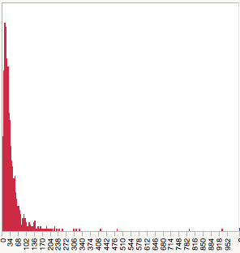

Exception ID
Sytuacje wyjątkowe w aplikacjachKrzysztof Suszyński
WJUG 239
Krzysztof Suszyński
 Senior Developer w ITM / Trener w SAGES
Senior Developer w ITM / Trener w SAGES- Ewangelizuje Javą i Puppetem
- Publikacje OSS @ Gov
- Wiele publikacji OSS w różnych językach: java, ruby, javascript

O czy opowiem?
Powiem jak to okiełznać
Jak sprawić, by strony 500 były przydatne
We are in future!
2019`ish?
Aplikacje są coraz więsze
- Integracje, webserwisy, REST
- Internet of things
- Microserwisy
- DevOps == Dev + Ops + QA
Ilość błędów rośnie wraz ze złożonością
Wielkość kodu powoduje wykładniczy wzrost złożoności
Złożoność powoduje liniowy przyrost błędów
Wyjątki
Edsger Dijkstra

1930 - 2002
Structured programming
“ Go To Statement Considered Harmful”
E. Dijkstra 1968

Turing Machine

Staramy się uważać na skoki, choć są niezbędne
Wyjątek vs Goto
- wyjątekoczywiście oznacza wystąpienie błędu
- pozwala skoczyć tak jak goto
- choć z ograniczeniami, tylko do obsługi
- wiele osób używa wyjątków zupełnie jak goto
Checked vs Runtime
- niewiele języków (Java, C# ?!) ma takie rozróżnie
- wyjątki checked łatwo prowadzą do łamania zasady Dijkstry
- używać ich można jedynie dla interfejsów API
Będę mówił tylko o runtime!
Wyjątki / Błędy
Najczęstsze problemy
Widomość
która za mało mówi
- null / cant be null
- error
- value is invalid
Widomość
która zajmuje za dużo
- cała treść XML w message
- lista wszystkich 123 naruszeń
- treść niezaufanego certyfikatu
Stacktrace
jest problematyczny
- zajmuje wiele linii
- przez co trudno go przeglądać / parsować
- czasami wogóle nieprzydatny
Stacktrace vs. Event'like
Ale i tak nieźle
Error: signal 11:
./test(handler+0x19)[0x400911]
/lib64/tls/libc.so.6[0x3a9b92e380]
./test(baz+0x14)[0x400962]
./test(bar+0xe)[0x400983]
./test(foo+0xe)[0x400993]
./test(main+0x28)[0x4009bd]
/lib64/tls/libc.so.6(__libc_start_main+0xdb)[0x3a9b91c4bb]
./test[0x40086a]C++ jest dużo mniej czytelny
Logi
- w większości większych firm jest utrudniony dostęp
- czasami ciężko zdobyć dokładnie ten stack trace o który nam chodzi
- czasami musimy czekać na anonimizację logów
Rozwiązanie
Exception ID
banalny pomysł
- biblioteka dla Java
- flow pracy
moje inspiracje
- kod i flow pracy w Centralnym Ośrodku Informatyki,
czyli tzw. CIN - biblioteka Guava
Eid
// Obiekt przechowujący informacje o błędzie
Eid eid = new Eid("20160111:173211", "WJS-001");
// '20160111:173211' - unikalne ID
// 'WJS-001' - opcjonalny numer referencyjny
// z zewnętrznego źródła
Eid - standardowa reprezentacja
Eid eid = new Eid("20160111:173211");
eid.toString();
// ↵ [20160111:173211]<sk9ym6>
new Eid("20160111:173211").toString();
// ↵ [20160111:173211]<b9qoq0>
new Eid('20160111:173211', 'WJS-002').toString();
// ↵ [20160111:173211|WJS-002]<dbo1az>
Eid*Exception - zestaw wyjątków
- EidRuntimeException
- EidNullPointerException
- EidIllegalArgumentException
- EidIllegalStateException
- EidIndexOutOfBoundsException
Eid*Exception - przykłady użycia
Eid eid = new Eid("20160110:095947");
throw new EidIllegalArgumentException(eid);
throw new EidNullPointerException("20160111:130412");
throw new EidIllegalStateException(
"20150721:100554",
"No database connection in poll"
);
Eid*Exception - efekt?
ERROR 2016-01-11T22:48:42.445 EidIllegalStateException:
↵ [20150721:100554]<rww5y3> => No database connection in poll
at pl.wavesoftware.examples.eid.EidTest.test(EidTest.java:56)
...
Eid*Exception - efekt?
// linia podzielona na fragmenty
EidIllegalStateException: ↵ // typ błędu, zawsze
[20150721:100554] ↵ // ID statyczne, zawsze
<rww5y3> ↵ // ID losowe, zawsze
No database connection in poll // komunikat, opcjonalny
Eid*Exception - error 500 page done right
Mając Eid wiemy gdzie wystąpił błąd
Ale skąd te numery?
Generatory Eid - flow pracy
Aby pracować wydajnie i uniknąć copy & paste, potrzebne nam generatory...
EidPreconditions
- zestaw wygodnych metod pomocniczych
- połączenie pomysłu Guava z Eid
- przyśpieszenie procesu developmentu
checkArgument
double sqrt(double value) {
checkArgument(
value >= 0.0d, "20150718:012333"
);
// if ok, calculate the square root
}checkArgument używamy aby sprawdzić dane wejściowe do metody pod kątem technicznym, nie biznesowym
checkState
checkState(
r >= 0.0d && mass > 0.0d,
"20150721:115016"
);checkState używamy aby sprawdzić stan obiektu w danej chwili pod kątem technicznym a nie biznesowym
checkNotNull
User safeUser = checkNotNull(
user, "20150721:115515"
);checkNotNull używamy aby upewnić się że jakaś wartość nie jest null'em pownieważ w danym kontekście takiej wartości nie obsługujemy
checkElementIndex
checkElementIndex(
index, list.size(),
"20150721:115749"
);checkElementIndex używamy aby sprawdzić parametry dla tablic i kolekcji random-access, przed ich użyciem
EidExecutions
tryToExecute
InputStream is = tryToExecute(
() -> { loadFile("project.properties"); },
"20150718:121521"
);tryToExecute używamy dla operacji, które powinny wykonywać się poprawnie, ale technicznie mogą zakończyć się błędem
Bonusowo!
Eid - logowanie
log.debug(new Eid("20151119:121814")
↵ .message("REST request: {0}", request)
↵ .toString());Konsola:
2017-01-08 16:45:34,334 DEBUG [20151119:121814]<d1afca>
↵ REST request received: <RestRequest user=<User id=345>
↵ flow=ShowLastTransactions step=Confirm>True Story - COI
- efektywna analiza i poprawianie najistotniejszych błedów
- 98,6 % unikalnych numerów Eid (25k numerów)